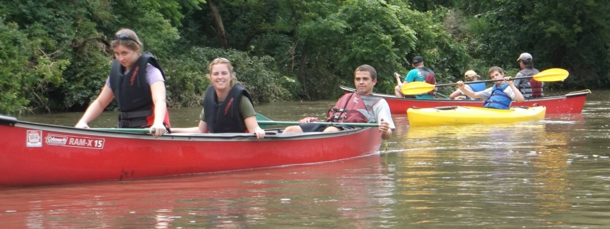

About Randy
Celeste and I moved to Indianola a little over 16 years ago. And it's been a great move for our family.
We brought our seven children and enrolled them in the Indianola schools where they participated in band, orchestra, and many sports. Over the years, we've had a lot of team dinners in our home.
We moved into a new phase of life as grandparents as the first of our grandchildren was born just over 5 years ago. We have two more grandchildren coming this year bringing us to 15 grandkids.
I work with General Dynamics IT working with the Veteran's Administration. I manage several IT teams providing services to the many veterans and their families. It's been a great experience.
I do a lot of running, biking, and nordic skiing. You've possibly seen me riding a unicycle around town.
We've enjoyed a lot of activities as my family has grown. Some of those activities have included canoeing, biking, and traveling. We been able to see 48 of the 50 states as a family as we drove in the family suburban and camped along the way.
